René Burri
Big Things Begin with a Letter
One of these days, I'm going to publish a book
of all
the pictures I did not take. It is going to be a huge hit.
René Burri, New York
Times, May 20 2004
Born in Zurich in 1933, René Burri studied composition, color and design at the School for Arts and Crafts in his hometown. Later on as he became a photographer, he also pursued his earlier interests in series of diary-like collages and by integrating writing, painting and photography.
From 1953-55 he worked as a documentary filmmaker and started using a Leica while he was in the military service. In 1955 he made contact with the Magnum agency through Werner Bischof, and his first reportage on deaf-mute children was published in Life and other European magazines.
As of 1956 Burri was traveling in Europe and the Middle East on Magnum assignments. The work he did in Germany was published in his first book with a foreword by Jean Baudrillard. In 1959 Burri became a full member of Magnum; he had just spent six months in South America for his reportage on the gauchos.
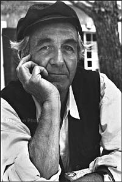 |
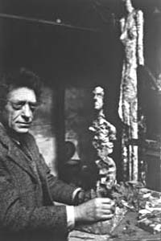 |
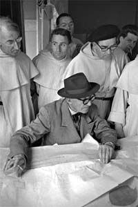 |
In the 1960s Burri photographed artists such as Picasso, Giacometti and Le Corbusier for Du magazine. In 1963, while working in Cuba, he made portraits of Fidel Castro and of a young Che Guevara smoking a cigar, which became famous in poster form. In the 1960s and 1970s Burri reported from war zones in Vietnam and Cambodia, and from Beirut in the 1980s. He shot a number of films among which 'The Two Faces of China' for the BBC. Burri also co-curated the Magnum exhibition Terre de Guerre (Land of War) with fellow member Bruno Barbey.
The story of Burri's career is the story of the last half of the 20th century, with all its conflicts and characters. Burri shot portraits, and architecture, and though he often took assignments as a photojournalist, he was never without his artful eye, and his talent for finding the human face in history.
|
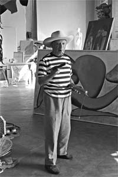 |
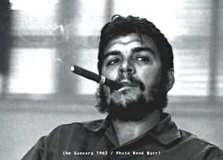 |
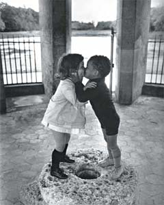 |
Photographers may be among the artists whose images can become more famous than they are. At least that's true for the globe trotting photographer Rene Burri. You might not know his name, but you've almost certainly seen his work: from Picasso's Paris and Franco's Spain, to war-torn Vietnam, to that ironic image of a young "revolutionary" Che Guevara chomping defiantly on a cigar, like the last of the bourgeois that he hated, at the Cuban Ministry of Industry.
René Burri: The ultimate photo -
there's no such thing. But the camera is my third eye. I've even called it my
mistress. It's become a part of me, just as a favorite and well-used tool
becomes an extension of the craftsman's hand.
Does that mean the camera is an extension of your eye?
And my brain. A photographer needs a good eye for composition and a sense of
timing. The eye, heart, and brain have to come together behind the lens.
Was this curiosity about what happens behind
the scenes what led you to do portraits of so many celebrities, such as Picasso,
Alberto Giacometti, Maria Callas and Le Corbusier?
People have accused me of being a celebrity hound. But that's not true.
I was never interested in celebrities just because they were famous. It's always
the person that attracts me. For example, in 1953, when I saw the Picasso
painting "Guernica" for the first time I thought: "I must get to meet this
person." It did take four years though for this to happen.
After:
http://emagazine.credit-suisse.com/article/index.cfm?fuseaction=OpenArticle&aoid=72951&lang=EN
|
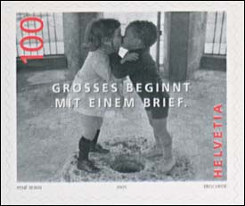 |
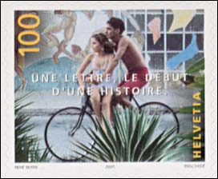 |
This site doesn't usually covers photography, even if its author is also a passionate photographer. But this definitive set, valid in Switzerland from the 3rd of January 2005, is so interesting that it deserves a page on an Art on Stamps site. The set appeared in a stamp booklet of two sets (8 self-adhesive) stamps), each having a face value of 1 Swiss Franc (the tax for a Priority letter in Switzerland, for next day deliveries).
|
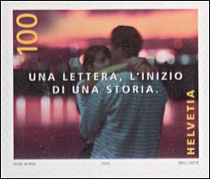 |
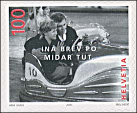 |
By this set Swiss Post started a letter writing campaign, under the motto "Big things begin with a letter". The selected pictures show people of different ages whose emotional involvement has been palpably captured by René Burri. The motto appears on each of the new stamps in one of Switzerland's four national languages, giving each letter a touch of art, of sensibility, of poetry. The pictures were named as follows: First Love, Passionate Love, Great Love and Eternal Love.
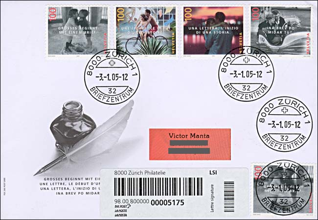
The above cover was sent to the author of this page as a registered letter (lettre signature) by the Swiss Post, Philately Dept. It is cancelled on the issuing day.
|
Created 03/10/05. Revised:
03/10/05. Copyright © 2005 by Victor Manta, Switzerland. All rights reserved worldwide. |
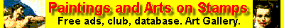 |